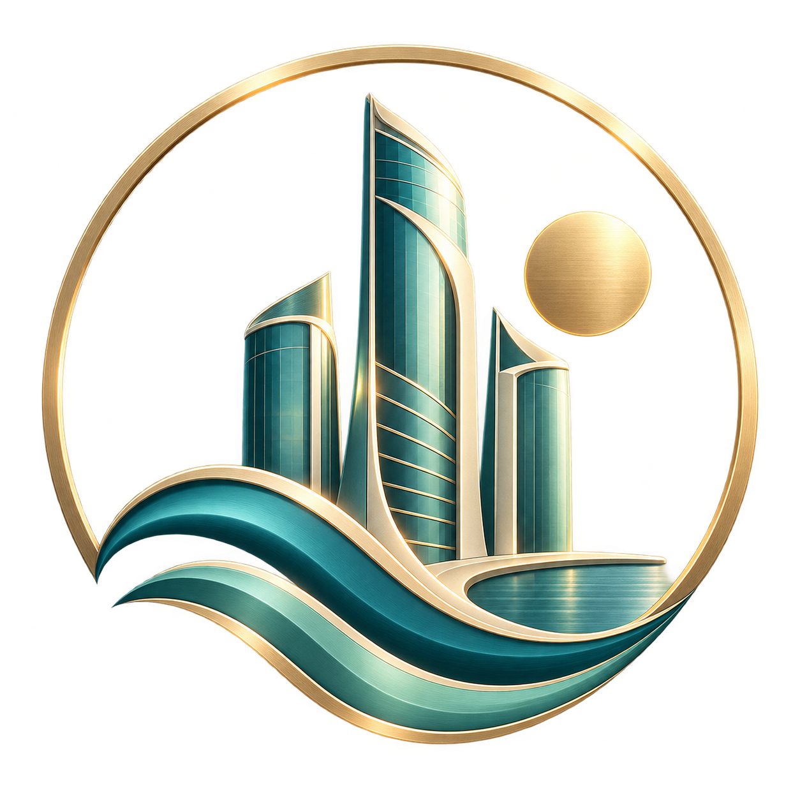

SEABRIGHT
A city in balance
Start small. Shape your streets.
Grow your own coastal skyline.
Desktop keyboard and mouse recommended. Sound starts after entering.
Save in the game toolbar. Your city stays in this browser.
Clearing site data removes browser saves.